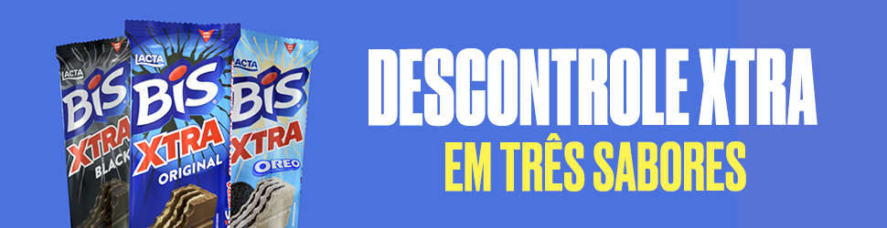

Tricolor Gaúcho enfrentará Raposa às 16h no domingo (21), na Arena; Ponte Preta e Guarani entram em campo no Moisés Lucarelli às 11h de sábado (20)
Torcedor gremista na Arena do Grêmio em 2021.
Os clubes da Série B do Brasileirão entrarão em campo ao longo deste final de semana para completar a 25ª rodada do campeonato.
Enquanto a zona de acesso – formada por Cruzeiro, Bahia, Grêmio e Vasco – mantém uma distância de seis pontos para o quinto colocado, o Tricolor Gaúcho tentará diminuir a distância de 10 pontos para a liderança da Raposa.
O jogo acontecerá às 16h deste domingo (21) na Arena do Grêmio, em Porto Alegre. O torcedor gremista baterá o recorde de comparecimento porque os cerca de 50 mil ingressos para a partida já estão esgotados.
Até então, o jogo do Imortal com maior público nesta temporada foi contra a Ponte Preta, pela 20ª rodada, com 43 mil presentes.
O Grêmio pode assumir a vice-liderança, porque o atual segundo colocado Bahia já entrou em campo pela rodada e está apenas um ponto à frente.
Nos últimos dez confrontos entre os clubes, há um equilíbrio de quatro vitórias pra cada lado e dois empates.
O Grêmio entrará em campo após ver o fim de sua invencibilidade na competição com uma derrota para o CRB. Já o líder Cruzeiro vem de um empate em casa contra a Chapecoense.
Continua depois da publicidade
Outro jogo que atrai atenção nas últimas disputas da 25ª rodada da Série B é o dérbi 204 entre Ponte Preta e Guarani.
As equipes entrarão em campo às 11h de sábado (20) em um Moisés Lucarelli lotado. De acordo com a Ponte, já foram vendidos mais de 14 mil ingressos, e a última cota com menos de dois mil bilhetes vai à venda nesta sexta (19).
O número já garante recorde de público no Majestoso nessa temporada, que até então era ocupado pelo jogo contra o Vasco com mais de 8 mil pagantes. Os dois clubes se encontram na tentativa de melhorar a situação na parte de baixo da tabela. A Macaca está atualmente na 13ª posição, a quatro pontos da zona de rebaixamento. Já o Guarani está na 18ª posição – três pontos atrás do CSA, primeiro clube fora da zona.
Nos últimos dez confrontos entre Ponte e Guarani, foram três vitórias para cada lado e quatro empates.
A Ponte Preta vem de uma derrota para o Brusque, que quebrou uma série embalada de três partidas invictas. Enquanto o Guarani jogará após uma vitória contra o Náutico, que aliviou a situação bugrina após seis jogos sem ganhar.